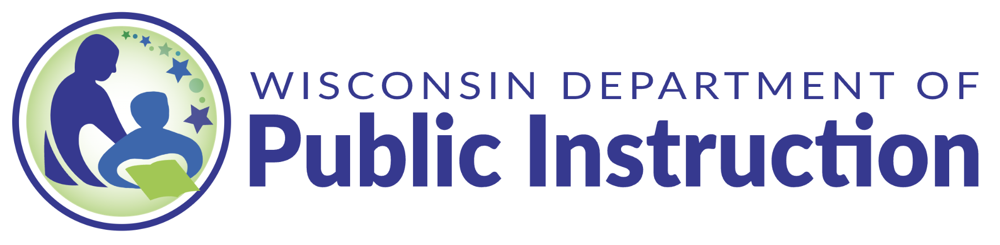

Culturally Responsive Positive Behavioral Interventions and Supports (CRPBIS)
Led by Professor Aydin Bal, this Wisconsin-based initiative works with schools, communities, and state partners to address inequities in discipline and special education through collaborative, systems-level transformation.
Supported by a two-year federal grant (CFDA 84.027) through the Wisconsin Department of Public Instruction.